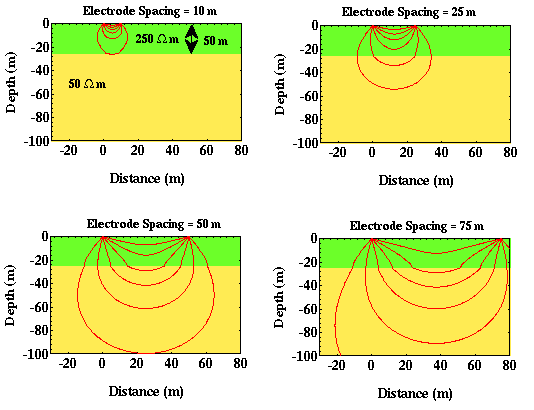
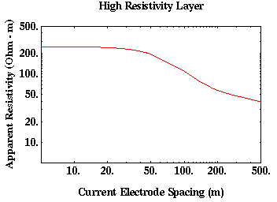

Current Flow in Layered Media Versus Current Electrode Spacing
Imagine that we conduct a series of four electrode experiments, each centered about the same point. Let's assume that the potential electrodes remain centered between the current electrodes and that their separation is held fixed. Initially, the current electrodes are placed close together and we measure current and voltage from which we compute apparent resistivity. Then we perform the same experiment, but we systematically increase the current electrode spacing while holding the potential electrode spacing fixed. What will happen?
Consider the earth model shown below: a high resistivity layer over a lower resistivity layer.

When the current electrodes are closely spaced, in the region surrounding the potential electrode positions (between the two current electrodes), most of the current flows through the upper layer along paths that are close to those that they would have flown along if the model were homogeneous. That is, in this electrode configuration, current flow is not perturbed enough near the potential electrodes for us to be able to distinguish between this layered model and a homogeneous Earth model with a resistivity equal to the resistivity of the top layer. Thus, the computed apparent resistivity will be close to the resistivity of the upper layer, 250 ohm-m.
Now, we increase the current electrode spacing and repeat the same experiment. At larger current electrode spacings, the current flow near the potential electrodes is significantly altered by the presence of the subsurface boundary. In this case, current is preferentially drawn downward into the lower resistivity layer, decreasing the current density between the two current electrodes where we will measure the voltage with our two potential electrodes. This decrease in current density will cause our computed value of apparent resistivity to decrease from 250 ohm-m.
At very large current electrode spacings, underneath our potential electrodes, the pattern of current flow is again similar to that which we would observe in a homogeneous Earth model. In this case, however, the media has a resistivity of 50 ohm-m, not 250 ohm-m. Thus, if we were to compute and plot apparent resistivity for a variety of current electrode spacings while holding the potential electrodes fixed, we would generate a plot similar to that shown below.

As is common for curves of this type, notice that this plot is a Log-Log plot. Instead of plotting apparent resistivity versus current electrode spacing, we have plotted the Log (base 10) of the apparent resistivity versus the Log (base 10) of the current electrode spacing. This is done because, in practice, we will find that both the apparent resistivities and the current electrode spacings will vary over two to three orders of magnitude (e.g., spacings can commonly increase from 0.25 m to 250 m). Using Log-Log plots provides us with a means of compressing the relevant information into a single graph. In the example shown above, notice that the apparent resistivity does not approach the resistivity of the lower layer until the electrode spacing approaches 500 m! Thus, large electrode spacings are required to see deep structure. A good rule of thumb is that you will need current electrode spacings on the order of 10 times the depth to which you would like to see.
Resistivity
- Current Flow and Ohm's Law pg 4
- The Fund. Electrical Property is Resistivity, NOT Resistance pg 5
- Resistivities for Common Earth Materialspg 6
- Current Density and Electric Fieldpg 7
- A First Estimate of Resistivitypg 8
- Current Flow From Two Closely Spaced Electrodespg 9
- A Practical Way of Measuring Resistivity pg 10
- Sources of Noise pg 11
- Depth of Current Penetration V.S. Current ElectrodeSpacing pg 12
- Current Flow in Layered Media pg 13
- Variation in Apparent Resistivity: Layered Versus Homogeneous Media pg 14
- Current Flow in Layered Media Versus Electrode Spacing pg 15
- A Second Example of Current Flow in Layered Mediapg 16